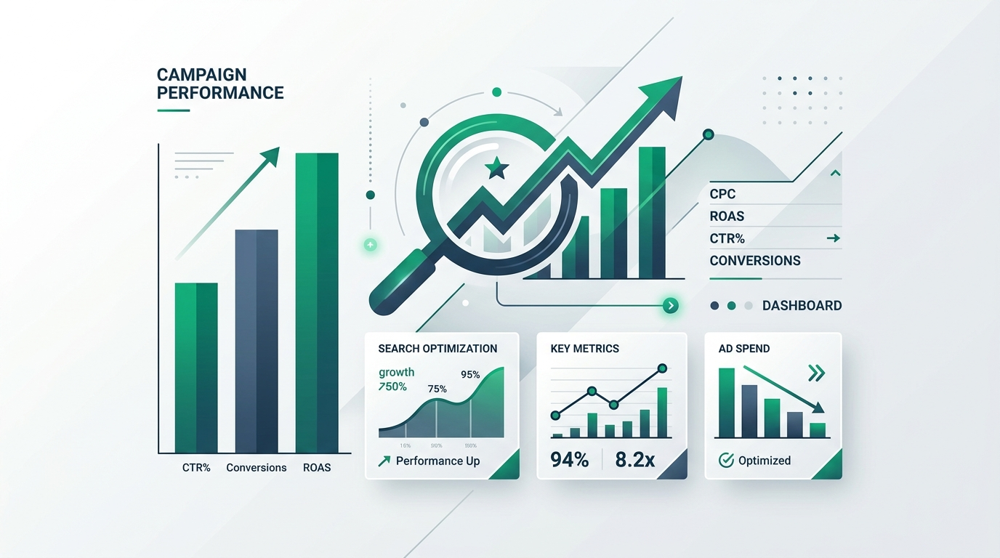

Search Impression Share (SIS) stands as the definitive metric of opportunity in paid search marketing. In my experience auditing over 150+ high-spend enterprise Google Ads accounts, Search Impression Share is frequently misunderstood, yet it holds the key to uncovering hidden conversion opportunities and eliminating budget inefficiencies.
Put simply, Search Impression Share is the percentage of impressions your ads receive divided by the estimated number of impressions you were eligible to receive. This eligibility is dynamically calculated by Google based on your targeting settings, approval status, bids, and Quality Scores. Mathematically, it is represented as:
If your impression share is at 60%, it means that for every 10 searches for your target keywords, your ad was hidden or failed to win the auction 4 times. For high-intent keywords, this represents a significant loss of potential revenue. To capture this missed opportunity, we must diagnose why your ads are failing to show.
The Core Diagnostics: Budget vs. Rank Loss
Google Ads categorizes lost impression share into two distinct segments. Understanding this breakdown is the absolute starting point for your optimization workflow:
1. Search Lost IS (Budget)
This indicates that your campaigns ran out of daily budget. Google responds by throttle-delivering your ads or shutting them off entirely during parts of the day. If your budget is $100 and clicks cost $5, your ad can only show 20 times before disappearing, regardless of how many thousands of searches occurred afterward.
2. Search Lost IS (Rank)
This metric tells you that your ad rank was too low to place. Ad Rank is determined by your bid amount, real-time auction signals, context of search, and your **Quality Score** (CTR, Ad Relevance, and Landing Page Experience). If your rank is low, raising your budget won't help; your ads will continue losing auctions.
Actionable Protocols for Lost IS (Rank)
Losing impression share to rank points directly to Quality Score issues. Here is my structured checklist to optimize your Quality Score and recover ad position:
- Optimize Ad Relevance: Use **Responsive Search Ads (RSAs)** effectively. Ensure your top-performing search terms are pinned or heavily present in your primary headlines. Group tight, highly-focused ad groups (no more than 5-10 tightly related keywords per ad group).
- Increase Expected Click-Through Rate (eCTR): eCTR is Google's prediction of how likely your ad is to be clicked. Enhance this by writing compelling, benefit-driven headlines, utilizing callout assets, structured snippets, and site links. Rich ad extensions increase visual real estate and boost CTR by 10-15%.
- Improve Landing Page Experience: Ensure your landing page content directly matches the search query. If the keyword is "custom Shopify development", the landing page header must reflect "Shopify Development". Optimize page load speeds using next-gen image formats and caching, as page speed directly impacts Quality Score.
Strategic bidding adjustments
Bidding models dictate your auction competition. If your Quality Score is high but you still lose rank, you must adjust your bidding strategy:
- Target Impression Share Bidding: Switch to this smart bidding strategy if your primary goal is brand defense or visibility. You can target a specific placement (e.g., Absolute Top of Page) and set an impression share target (e.g., 90%). Set a maximum CPC limit to prevent runaway bids.
- Value-Based Smart Bidding: If scaling revenue, transition from Maximize Clicks or Maximize Conversions to **Target ROAS (tROAS)**. This allows Google's bidding engine to bid higher only when it predicts a high conversion value, automatically increasing your impression share in high-value auctions.
Actionable Protocols for Lost IS (Budget)
If you are losing impression share due to budget constraints and do not have additional ad spend to allocate, your goal is to **narrow the funnel**. By focusing your limited budget on higher-intent traffic, you will naturally increase your impression share among the searches that matter most:
- Ad Scheduling (Dayparting): Review your historical conversion data in GA4. If you notice that conversions are expensive or non-existent between 11:00 PM and 6:00 AM, apply bid adjustments or turn campaigns off during those hours. This preserves budget for peak conversion windows.
- Geographic Consolidation: Exclude low-converting zip codes, cities, or countries. If you target all of India but 80% of your sales occur in major metros like Gurgaon, Mumbai, and Bangalore, restrict your targeting exclusively to those regions. Your impression share in those target regions will jump, lowering overall acquisition costs.
- Keyword Match Type Consolidation: Broad match keywords can consume budget quickly on irrelevant queries. Consolidate your high-performing search terms into **Phrase Match** or **Exact Match** variations. Use broad match only in separate testing campaigns with dedicated, smaller budgets.
Summary & Checklist for Weekly Audits
To maintain healthy search campaigns, make SIS checks a core part of your weekly optimization routine. Look for ad groups with less than 70% Search IS. If lost to budget, refine parameters or scale budget. If lost to rank, rewrite ads, verify landing page speed, and review auction keyword matches. By systematically addressing these bottlenecks, you will maximize conversion efficiency and capture your entire market opportunity.